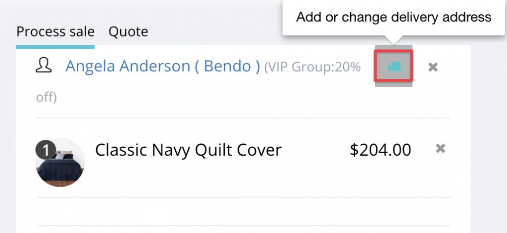

<?xml version="1.0" encoding="UTF-8"?><rss version="2.0"
	xmlns:content="http://purl.org/rss/1.0/modules/content/"
	xmlns:wfw="http://wellformedweb.org/CommentAPI/"
	xmlns:dc="http://purl.org/dc/elements/1.1/"
	xmlns:atom="http://www.w3.org/2005/Atom"
	xmlns:sy="http://purl.org/rss/1.0/modules/syndication/"
	xmlns:slash="http://purl.org/rss/1.0/modules/slash/"
	>

<channel>
	<title>Hike POS Software</title>
	<atom:link href="index.html" rel="self" type="application/rss+xml" />
	<link>http://hikeup.com/</link>
	<description></description>
	<lastBuildDate>Thu, 22 Apr 2021 04:28:03 +0000</lastBuildDate>
	<language>en</language>
	<sy:updatePeriod>
	hourly	</sy:updatePeriod>
	<sy:updateFrequency>
	1	</sy:updateFrequency>
	<generator>https://wordpress.org/?v=5.7.1</generator>

<image>
	<url>https://hikeup.com/wp-content/uploads/cropped-favicon-3-32x32.png</url>
	<title>Hike POS Software</title>
	<link>http://hikeup.com/</link>
	<width>32</width>
	<height>32</height>
</image> 
	<item>
		<title>April 2021 Newsletter</title>
		<link>https://hikeup.com/blog/april-2021-newsletter/</link>
		
		<dc:creator><![CDATA[Hiren Savjiyani]]></dc:creator>
		<pubDate>Thu, 22 Apr 2021 04:22:39 +0000</pubDate>
				<category><![CDATA[What's new in Hike]]></category>
		<guid isPermaLink="false">https://hikeup.com/?p=52732</guid>

					<description><![CDATA[<p>Hi, everyone. In the past month, we have been working on extending and improving features relating to day-to-day operations and user permission controls. We have also added and updated&#160; 30 video tutorials to help your new staff get going on Hike. All-in-all there are plenty of exciting updates rolled out and I cannot wait to&#8230; <a href="../blog/april-2021-newsletter/index.html" class="more-link">Read more</a></p>
<p>The post <a rel="nofollow" href="../blog/april-2021-newsletter/index.html">April 2021 Newsletter</a> appeared first on <a rel="nofollow" href="../index.html">Hike POS Software</a>.</p>
]]></description>
										<content:encoded><![CDATA[
<p>Hi, everyone. In the past month, <span id="more-52732"></span>we have been working on extending and improving features relating to day-to-day operations and user permission controls. We have also added and updated&nbsp; <a href="https://help.hikeup.com/portal/en/kb/articles/video-tutorials">30 video tutorials</a> to help your new staff get going on Hike. All-in-all there are plenty of exciting updates rolled out and I cannot wait to share those with you:</p>


<h2>Process on-account sales in offline mode (pilot release)</h2>


<p>Now you can use the on-account feature in offline mode. Your cashiers will be able to edit the customer credit limits, and put a sale on account, even if the internet isn’t available.</p>


<p>The feature is now supported on both &#8211; computers and iPads. However, it’s under pilot testing at the moment, so it’s not accessible to all users. If you would like to be added into the pilot testing, please contact our support team on chats or in tickets. Please note: on-account feature is only available to one-store or higher plans.</p>


<h2>Outlet visibility of customers</h2>


<p>Similar to users, now you can control the access of customer data on outlet basis. On the one hand, it improves the efficiency of searching for a customer on the process sale screen, because it will only list customers visible to the outlet your staff have logged in. On the other hand, it enhances the security, as users can only access the customers visible to the outlets to which they have access.</p>


<p>To use the feature, please enable it in Store setup > General > General Rules.</p>


<figure class="wp-block-image size-large"><figcaption>General Rules</figcaption></figure>


<h2>Customised receipts</h2>


<p>In the past few months, we’ve been receiving feedback on the font sizes on the receipts. We’ve listened to your feedback and now introduced ability to change receipt font sizes. On your receipt, you can now apply font sizes to different data items individually. This allows you to design your receipts to suit the needs of your target customers.</p>


<figure class="wp-block-image size-large"></figure>


<p>The setting page can be accessed by clicking on the gear button on the editing page of receipt templates.</p>


<p>Also, one more option has been added to A4 receipts. You can print product barcodes on them.</p>


<figure class="wp-block-image size-large"></figure>


<p>Please note: the feature to customise font sizes is only available to one-store or higher plans.</p>


<h2>Editing quotes</h2>


<p>If you haven’t learned the quote feature which we released late 2020, it’s never too late. Here’s a support article on <a href="https://help.hikeup.com/portal/en/kb/articles/how-to-issue-a-quote">how to issue a quote</a>.</p>


<p>The update we did for this feature in April takes the user experience to the next level. You cashiers can edit quotes at any time as long as they haven’t been converted to sales or discarded. It’s as simple as reopening the quote from sales history and making the change. Detailed instructions can be found in the support article linked above.</p>


<p>Please note: quote feature is only available to one-store or higher plans.</p>


<h2>Managing delivery for in-store sales</h2>


<p>Delivery service used to be mainly used in eCommerce stores, seldomly for in-store sales. However, COVID has brought a lot of changes to the way a business is run. Succession to the support of <a href="https://help.hikeup.com/portal/en/kb/articles/how-to-set-a-delivery-address-for-a-sale">recording delivery addresses in a sale</a>, we support adding shipping charge in the invoice, too.</p>


<figure class="wp-block-image size-large"></figure>


<p>Compared to the workaround of using a non-inventory product to record it, the benefits of using the new feature are as follows.</p>


<ul><li>It won’t be counted as a line item in an invoice by mistake.</li><li>It’s excluded from sales summary and sales report on items, so that it makes your report cleaner.</li></ul>


<p>Moreover, another enhancement we have implemented is that the delivery address can be added or updated easily on the process sales screen by clicking on the truck icon to the right of the customer.</p>


<figure class="wp-block-image size-large"></figure>


<p>Please note: the feature to manage deliver addresses is only available to one-store or higher plans.</p>


<h2>New integration: Deputy</h2>


<p>Deputy is a renowned HR management platform. If you are still managing the roster of your staff separately on Hike and Deputy, the process can be automated now. The build-in integration added in Hike supports the synchronisation of the following data.</p>


<ul><li>Users</li><li>Rosters</li><li>Sales totals processed by each user</li></ul>


<h2>Sync composite products with Neto</h2>


<p>Composite products in Hike are used to create product bundles, while the feature is called kitted products in Neto. With the release of the new feature, you can now manage the composite products either from Hike or Neto, as per your convenience. Besides products, the sales of them can also synchronise in both ways and the inventory will be updated accordingly.</p>


<p>If you want to understand a bit more about composite products, please refer to <a href="https://help.hikeup.com/portal/en/kb/articles/creating-adding-products-in-hike#How_to_Add_Composite_Products_in_Hike">how to add composite products in Hike</a>.</p>


<h2>Hiding costs in transfers and purchase orders</h2>


<p>Product costs are confidential to businesses. Thus, you may not want all your staff to view the costs though they will need to use stock transfers or purchase orders. Two new options have been added in user permission, with which you can hide costs without disabling your staff to handle transfers and purchases.</p>


<h2>A new gender option for customers</h2>


<p>To avoid offending customers due to gender issues, Hike allows you to choose “Prefer not to say”, if your customer doesn’t want to use male or female to define the gender. The new option can be updated via import and can synchronise to the eCommerce platforms supporting similar features, like Neto and Magento.</p>


<h2>Optimisation on display and reports</h2>


<p>To help our clients getting more data with fewer clicks, we’ve added a few more filters and enhanced the reporting section. Here’s a brief list of them.</p>


<ul><li>On the product listing page (Products > Products), a new option has been added to show tax-exclusive prices.</li><li>On the sales history page (Point of Sale > Sales history), a new checkbox has been added for you to choose whether to include discarded sales and quotes in the list.</li><li>On the purchase order listing page (Inventory > Purchases), the purchase orders are sorted by order date from the latest to the oldest.</li><li>In the emails of custom reports, outlet name has been added to the email subject. Without opening the attachment, you will know which outlet the report is about.</li><li>In the sales by category report, more sales data have been added.</li></ul>


<h2>Upgraded video tutorials</h2>


<p>Apart from adding new features, our team has been also producing video tutorials to help you understand how to use Hike. The <a href="https://help.hikeup.com/portal/en/kb/articles/video-tutorials">30 videos</a> have covered most existing features, and we are recording more. If you are a video lover like me, or if you are still new to Hike, please feel free to watch them.</p>


<p>Please stay tuned, more updates are already cooking and on the way!</p>
<p>The post <a rel="nofollow" href="../blog/april-2021-newsletter/index.html">April 2021 Newsletter</a> appeared first on <a rel="nofollow" href="../index.html">Hike POS Software</a>.</p>
]]></content:encoded>
					
		
		
			</item>
		<item>
		<title>March 2021 Newsletter</title>
		<link>https://hikeup.com/blog/march-2021-newsletter/</link>
		
		<dc:creator><![CDATA[Hiren Savjiyani]]></dc:creator>
		<pubDate>Thu, 25 Mar 2021 13:32:14 +0000</pubDate>
				<category><![CDATA[What's new in Hike]]></category>
		<guid isPermaLink="false">https://hikeup.com/?p=52578</guid>

					<description><![CDATA[<p>Hi, everyone. We didn’t make much noise in February because we’ve been working on some major feature updates, which hopefully will benefit your business and make your life easy. Apart from improving the robustness of reporting and integrations, we’ve released many exciting updates. Here they come! New eCommerce integration: Magento If you enjoy DIY when&#8230; <a href="../blog/march-2021-newsletter/index.html" class="more-link">Read more</a></p>
<p>The post <a rel="nofollow" href="../blog/march-2021-newsletter/index.html">March 2021 Newsletter</a> appeared first on <a rel="nofollow" href="../index.html">Hike POS Software</a>.</p>
]]></description>
										<content:encoded><![CDATA[
<p>Hi, everyone. We didn’t make much noise in <span id="more-52578"></span>February because we’ve been working on some major feature updates, which hopefully will benefit your business and make your life easy. Apart from improving the robustness of reporting and integrations, we’ve released many exciting updates. Here they come!</p>


<h2>New eCommerce integration: Magento</h2>


<p>If you enjoy DIY when building your eCommerce store, Magento might be one of the top options. We’ve released the build-in integration with Magento, with which you can seamlessly sync the following data between Hike and Magento.</p>


<ul><li>Product details &amp; variants</li><li>Product categories</li><li>Customer profiles</li><li>Sale transactions</li><li>Payment history</li><li>Inventory</li></ul>


<h2>A new option of integrated payments in US</h2>


<p>Clearent is supported as an integrated payment option in United States. As of now, the support model is PAX A80. You will be able to initiate payment processing, refund, voiding, and batch settlement from Hike.</p>


<p>If you are interested in using Clearent with Hike, please feel free to contact our sales or support team.</p>


<h2>A new scanner app on iOS and Android</h2>


<p>With the new scanner app, Hike has made performing stocktake and receiving purchase orders much easier for you. You don’t need a physical scanner with you when counting your inventory or what you just received. The camera of your phone and the app will do the job. Grab your smart phone, open the app, and simply scan.</p>


<p>Here’s a short list of what you can do in the app.</p>


<ul><li>Create a stocktake</li><li>Update actual stock of products manually or by scanning</li><li>Share the scanned result in a csv</li><li>Receive a purchase order by scanning</li><li>Create a product</li></ul>


<h2>Optimised performance and user experience</h2>


<p>Every few weeks, Hike tries to optimise the performance and experience in different scenarios. Here’s a short list of the main optimisations implemented in the past month.</p>


<ul><li>The processing of product import is more than 2 times faster than before if you have multiple outlets</li><li>The process of processing Elavon and TD Bank payments is simplified, which saves you one click for each transaction.</li><li>SKUs are now shown in stock transfers. In case you have similar products or product names in a transfer, it will be easier to identify the product by SKU.</li></ul>
<p>The post <a rel="nofollow" href="../blog/march-2021-newsletter/index.html">March 2021 Newsletter</a> appeared first on <a rel="nofollow" href="../index.html">Hike POS Software</a>.</p>
]]></content:encoded>
					
		
		
			</item>
		<item>
		<title>Clearent &#038; Hike</title>
		<link>https://hikeup.com/blog/clearent-hike/</link>
		
		<dc:creator><![CDATA[Hike Team]]></dc:creator>
		<pubDate>Wed, 17 Mar 2021 12:24:51 +0000</pubDate>
				<category><![CDATA[Payment Processing]]></category>
		<guid isPermaLink="false">https://hikeup.com/?p=52386</guid>

					<description><![CDATA[<p>Accept credit cards payments with flexibility &#038; affordability</p>
<p>The post <a rel="nofollow" href="../blog/clearent-hike/index.html">Clearent &#038; Hike</a> appeared first on <a rel="nofollow" href="../index.html">Hike POS Software</a>.</p>
]]></description>
										<content:encoded><![CDATA[
<div class="wp-block-columns">
<div class="wp-block-column" style="flex-basis:100%">
<div class="wp-block-columns">
<div class="wp-block-column" style="flex-basis:100%">
<div class="wp-block-image"><figure class="aligncenter size-large"></figure></div>
</div>
</div>
</div>
</div>


<h2><strong>Accept credit cards payments with flexibility &amp; affordability</strong></h2>


<p><span id="more-52386"></span>We’re thrilled to announce that Clearent’s secure payment processing solutions have been fully integrated with Hike’s software. This offering gives Hike’s users the ability to streamline operations by easily accepting payments in the software you already know and love.</p>


<p>As a full-service processor, Clearent is uniquely positioned to Hike users the most competitive payment processing rates by removing unnecessary third-party fees.  They’ll even “meet or beat” your current rates, so your business can transact as affordably as possible.</p>


<h3><strong>This powerful offering also allows Hike users to:</strong></h3>


<ul><li><strong>Accept payments anywhere: </strong>With Clearent, Hike customers can continue selling even when selling offline as our payment terminals and Hike’s POS both work online and offline with no internet dependency.</li></ul>


<ul><li><strong>Streamline operations: </strong>Now that Clearent and Hike are connected, you’ll never have to enter a transaction twice &#8211; eliminating manual entry and associated errors.<br></li><li><strong>Achieve complete </strong><strong>financial transparency</strong><strong>: </strong>Through its powerful online tool, Clearent helps you break down all processing fees so you can see exactly what was charged and when.</li></ul>


<p>Better yet, Clearent can give Hike users greater access to their team of live support experts so you can get the personal attention and support your business needs to keep things running smoothly no matter what. </p>


<h2><strong>Getting started</strong></h2>


<ul><li>New to Clearent? <a href="https://go.clearent.com/hike">Click here to enquire.</a></li><li>New to Hike? <a href="https://my.hikeup.com/signup">Get started with a 14-day free trial</a></li></ul>


<p></p>
<p>The post <a rel="nofollow" href="../blog/clearent-hike/index.html">Clearent &#038; Hike</a> appeared first on <a rel="nofollow" href="../index.html">Hike POS Software</a>.</p>
]]></content:encoded>
					
		
		
			</item>
		<item>
		<title>Top Checkout Counter Ideas to Boost Your Retail Store</title>
		<link>https://hikeup.com/blog/top-checkout-counter-ideas-to-boost-your-retail-store/</link>
		
		<dc:creator><![CDATA[Hiren Savjiyani]]></dc:creator>
		<pubDate>Wed, 17 Feb 2021 13:23:50 +0000</pubDate>
				<category><![CDATA[Retail]]></category>
		<guid isPermaLink="false">https://hikeup.com/?p=52560</guid>

					<description><![CDATA[<p>When did you last consider the appearance or effectiveness of your retail store checkout counter? When retailers invest in their physical store, the checkout area is often one that is overlooked in favour of bright window displays and clear signage that draw people into the store instead. In fact, the checkout space is often considered&#8230; <a href="../blog/top-checkout-counter-ideas-to-boost-your-retail-store/index.html" class="more-link">Read more</a></p>
<p>The post <a rel="nofollow" href="../blog/top-checkout-counter-ideas-to-boost-your-retail-store/index.html">Top Checkout Counter Ideas to Boost Your Retail Store</a> appeared first on <a rel="nofollow" href="../index.html">Hike POS Software</a>.</p>
]]></description>
										<content:encoded><![CDATA[
<p>When did you last consider the appearance <span id="more-52560"></span>or effectiveness of your retail store checkout counter? When retailers invest in their physical store, the checkout area is often one that is overlooked in favour of bright window displays and clear signage that draw people into the store instead. In fact, the checkout space is often considered to be mainly transactional and undeserving of the love and attention that gets lavished on the other areas of the store.</p>


<p>What many people fail to realise is that the checkout counter offers plenty of untapped potential. As the last point of contact between you and your customers, it is your last chance to capture any last-minute sales and your final opportunity to leave a lasting positive impression on your customers that gets them on board with your brand and likely to return again. Fortunately, there’s lots of things you can do to maximise the potential of your checkout counter. Here’s a few of our favourite ideas.</p>


<h2>Make the checkout experience a safe one</h2>


<p>Unsurprisingly, most consumers still have high levels of concern regarding their safety when shopping in store. While some <a href="https://www.theguardian.com/business/2020/jun/23/britons-local-food-shops-online-stores-covid-19-supermarket">studies</a> have shown that consumers generally feel safer visiting smaller, independent retailers than they do larger chain stores, all stores need to take on board the necessity of illustrating their commitment to preventing the spread of Covid-19 and other illnesses. If you want to ensure that your customers return, you need to do everything in your power to make them feel safe. One of the areas where they are potentially at greatest risk is in the queue and at your checkout counter. This is because it is here that they are most likely to be in close proximity to other shoppers and to your staff.</p>


<p>Fortunately, there’s a range of things that you can do to make the checkout process as safe as possible for both your customers and your sales team. Some of the these include:</p>


<p><strong>Installing plexiglass on the countertop to physically separate your sales team from your customers.</strong> Have a small area at countertop level through which they can pass products to be scanned and their payment method.</p>


<p><strong>Provide sanitizing options.</strong> As we know, clean hands are one of the best ways of stopping the spread of disease. Providing customers with a way to sanitize their hands in the queue and/or at the checkout point is essential, and as they enter your store, is a basic and inexpensive method of increasing your safety provision.</p>


<p><strong>Using outside space for queuing if possible.</strong> It is harder for viruses to transmit between patients in the open air. Therefore, if you have any outside space which can be used for queuing, you can utilize this for your customer’s safety.</p>


<p><strong>Use floor markers to specify safe distances.</strong> This will help customers know how far apart to stand.</p>


<p><strong>Don’t operate checkouts next to one another.</strong> If you have multiple checkouts, don’t open up those directly next door to one another. If you have no choice, consider putting safety screens between them to create a physical barrier between your customers.</p>


<p><strong>Make sure that your POS supports contactless payments.</strong> As we know, Covid-19 and other illnesses are easily transferred between people by contact, especially if the infected party hasn’t washed their hands properly. Over the last year, the number of people making contactless payment has risen, and contactless is being actively encouraged by many stores since they require no physical interaction with the payment terminal. <a href="https://www.twobirds.com/en/news/articles/2020/global/increase-of-contactless-payment-limits-in-order-to-slow-down-spread-of-covid-19">Many countries</a> have also taken action to promote contactless payments – a direct result of the dramatic shift in payment preferences made by consumers. One <a href="https://www.nfcw.com/2020/08/19/367471/visa-one-in-two-consumers-are-no-longer-willing-to-shop-at-stores-that-dont-offer-a-fully-contactless-payments-process/">study</a> even found that 48% of consumers said that they would not shop at a store that didn’t offer contactless payments.</p>


<p>However, some retailers are falling behind when it comes to their technology. If your POS and terminal don’t currently support contactless payments, now is the perfect time to upgrade them. Doing so will demonstrate to customers that your retail store is modern, listening to what customers want and dedicated to their convenience and safety, providing an enhanced customer experience. Check out how <a href="../index.html">Hike</a> can support contactless payments and help you to grow your retail business.</p>


<h1>Encourage Impulse Buys</h1>


<p>The impulse buy is a powerful weapon to have in your sales arsenal. <a href="https://www.dacgroup.com/en-gb/blog/retail-therapy-and-the-power-of-the-impulse-buy/">Statistics</a> show that 88.6% of Americans have admitted to impulse shopping, making up to a whopping 156 impulse purchases each, every single year! If you want to get in on that action, you need to be encouraging your customers to snap up some of your products and one of the most effective ways to do this is by placing them near the checkout. One of the reasons for this is that when we spend time waiting at a checkout, we naturally look around us. By placing the right products at the checkout, it’s possible to capitalize on the compulsion to add just one more item to our purchases, without putting much thought into it.</p>


<h2>What products make great impulse buys?</h2>


<p>Some products are better impulse buys than others. Most customers aren’t going to impulsively spend $50 on something. However, things that only cost a few dollars are often picked up without much consideration, making them a great option to increase your sales income, and then hopefully profit, per customer.</p>


<p>Products that make great impulse buys usually fall into one of five categories. These are:</p>


<ul><li>Accessories for other products; think batteries, lighters, sticky tape etc.</li><li>Small, inexpensive items, such as candy and single snacks, socks, hair ties and gift cards.</li><li>Sample-sized or travel-sized versions of popular brands and products.</li><li>Amazing deals, such as value sets or deals based on multi-buys.</li><li>Seasonal items, like gift tags, holiday cards.</li></ul>


<p>Make sure you draw attention to your impulse buys through great lighting, signs and plenty of colour! And you can keep track of what’s successful and what’s not by using the inventory and reporting <a href="../software-features/index.html">features</a> on your POS.</p>


<h2>Utilize the power of social media</h2>


<p>Social media has changed the way in which retail stores can market their products and interact with their customers. Shopping is a social activity, so it should come as no surprise that retailers can successfully use social media platforms to both boost awareness of their brand and increase sales. <a href="https://www.mckinsey.com/industries/technology-media-and-telecommunications/our-insights/the-social-economy">Studies</a> show that while around 72% of companies are now using social technologies in some way, very few are utilising them to their full potential. Unfortunately, this is believed to be because many retailers remain fixed in the mindset that social media is only a sales tool.</p>


<p>Actually, any retailers who intend on using social media must develop a content strategy that places the customer firmly at the centre of it. One of the best ways of doing this is by encouraging your customers to share their own images of your store and of course, of your products. Doing so can raise your profile, get more eyes on your products and secure more visits to your store. Creating your own hashtag will make it easy for you to keep track of which customers are getting involved and the checkout is a perfect opportunity to remind them of how they can find you on social channels too since you’ll have their attention, and they may have time to follow you while they queue. Create clear signs letting them know how to connect with your brand on your social media – Instagram is a particularly important one for showcasing products. You can even explore the option of creating a promotion that links to social sharing.</p>


<h2>Share your brand story</h2>


<p>When customers buy from your retail store, they aren’t just buying your products, they are also buying into your brand. Using your brand story as a part of your marketing strategy is a great way to connect with customers, gain their trust and loyalty, and keep them coming back time and time again. One of the main reasons for this is because emotions have been found to drive purchases more than logic. A great brand story can attract new customers, and retain them, without the need for excessive and expensive marketing.</p>


<p>Consumers today are much more aware of who they are buying from and want their purchase decisions to align with their personal values and identity. Your brand story is what you want your business to be remembered for. One of the ways in which to determine this is to think about what emotion you want to invoke in your customers when they think about you. Studies have shown that people can forget exactly what is said, but it is much harder to forget the way that the message makes them feel. You can use your story to create a deep, emotional connection with your customers – both in person and in the virtual world with your social media platforms.</p>


<p>What’s this got to do with your checkout counter? The space around your checkout is an ideal area in which to display evidence of your brand story. Waiting in line or the time it takes to pay gives your customer’s minds time to wander, and you can draw their attention with a very visual display of your brand story. &nbsp;One of the best examples of this is Lush, who have very clear messaging that is perfectly in line with their brand values above every checkout.</p>


<h2>Choose a POS system that enhances the appearance of your checkout and the checkout experience</h2>


<p>You may have invested in a beautifully designed cash wrap for your checkout counter, but this won’t mean a thing if you have a clunky, old-fashioned POS that doesn’t fit with your retail brand. Consumers seriously value the appearance and atmosphere created by stores, and showcasing a shiny, modern and space-saving POS shows that you are prepared to invest in providing the best equipment for their check out experience.</p>


<p>An increasing number of retailers are choosing POS systems that work on tablets or computer, rather than conventional cash registers. Not only do they look more appealing, but they offer you and your customers greater flexibility. You don’t necessarily even need to be tied to a counter, but instead your sales associates can move around the store if necessary, and if you have an ecommerce store and don’t necessarily have your full product range instore, using an iPad-based POS gives your customers the opportunity to digitally browse your catalogue online and potentially make further purchases.</p>


<p>Choosing a great POS can even improve the entire checkout experience. By choosing a cloud-based POS system, you can process payments online and offline, accept gift cards, provide loyalty points, see full customer profiles and send customer receipts by email. You can even see live inventory counts and take a range of payment methods, ensuring that the process is simple, smooth and provides your customers with the best possible experience.</p>


<p><a href="../pos-hardware/index.html">Hike</a> has a range of retail POS hardware packages to choose from, including those that work with iPads and other type of computer, enabling you to choose the one that works best for your store and counter setup. Super-easy to install, it takes just a few minutes to get started with Hike POS.</p>


<p>If you want to show your checkout counter some love and would like to find out more about how Hike POS can help, please visit our website. Alternatively, <a href="https://my.hikeup.com/signup?_ga=2.137362104.909611889.1611764444-514662066.1611764444">sign up for your free trial</a> today.</p>
<p>The post <a rel="nofollow" href="../blog/top-checkout-counter-ideas-to-boost-your-retail-store/index.html">Top Checkout Counter Ideas to Boost Your Retail Store</a> appeared first on <a rel="nofollow" href="../index.html">Hike POS Software</a>.</p>
]]></content:encoded>
					
		
		
			</item>
		<item>
		<title>Hike Update – January 2021</title>
		<link>https://hikeup.com/blog/hike-update-january-2021/</link>
		
		<dc:creator><![CDATA[Hiren Savjiyani]]></dc:creator>
		<pubDate>Wed, 13 Jan 2021 09:54:29 +0000</pubDate>
				<category><![CDATA[What's new in Hike]]></category>
		<guid isPermaLink="false">https://hikeup.com/?p=51499</guid>

					<description><![CDATA[<p>Hi everyone, hope everyone had a safe and fruitful holiday. December is as always, a busy period in terms of the business for you. As such, even though we had a ton of new features ready to release, we were holding off on them to ensure unchanged workflow for your team. We are excited to&#8230; <a href="../blog/hike-update-january-2021/index.html" class="more-link">Read more</a></p>
<p>The post <a rel="nofollow" href="../blog/hike-update-january-2021/index.html">Hike Update – January 2021</a> appeared first on <a rel="nofollow" href="../index.html">Hike POS Software</a>.</p>
]]></description>
										<content:encoded><![CDATA[
<p>Hi everyone, hope everyone had a safe and fruitful holiday.<span id="more-51499"></span> December is as always, a busy period in terms of the business for you. As such, even though we had a ton of new features ready to release, we were holding off on them to ensure unchanged workflow for your team.</p>


<p>We are excited to bring these features to you now. We have listed all improvements and new features herewith.</p>


<h2>New options of integrated payments in AU </h2>


<p>All of the following payment processors are supported as integrated payment types in Australia.</p>


<ul><li>NAB (National Australia Bank)</li><li>ANZ (Australia and New Zealand
Banking Group)</li><li>Fiserv</li><li>Bendigo (Bendigo Bank)</li></ul>


<p>We’ve partnered with Linkly, an integrated EFTPOS solution, to open up the opportunities to use them as integrated payments with Hike. At the moment, we are working on the partnership with the banks and will announce it when they are ready. Please stay tuned and excited.</p>


<h2>New terminal compatibility for Worldpay in US</h2>


<p>If your business is located in US and using Worldpay, a new model, Ingenico Lane/3000, is added in the list of Hike supported terminals. It’s a smarter terminal, and here’s <a href="https://apac.ingenico.com/smart-terminals/payment-terminals/retail/lane-3000.html">some brief information</a> of it from its official website. You can also approach the Worldpay team for further details.</p>


<h2>Managing awaiting stock </h2>


<p>Receiving stock has got much easier than ever before. It takes only a few clicks to locate a purchase order or transfer related to a delivery you just received.</p>


<p>In the past, you might have experienced going through all open purchase orders, just to find which one is related to what you’ve got. It may take you 30 minutes or even a few hours to complete, if you have many open ones. Now, 5 minutes instead.</p>


<figure class="wp-block-image size-large"></figure>


<p>Links of the related purchase orders and stock transfers have been added on the My Inventory page. The whole process is as easy as finding the product, going through the linked purchaser orders or transfers, and receive it. For further information on how to use it, please refer to <a href="https://help.hikeup.com/portal/en/kb/articles/tips-check-where-awaiting-stock-come-from">Tips: Check Where Awaiting Stock Come from</a>.</p>


<h2>Managing delivery addresses (supported in one-store or higher plans)</h2>


<p><em>“Please deliver what I bought to the following address: xxx.”</em> If you frequently get requests like this from your customers, the new feature of managing delivery addresses will help you streamline the process. </p>


<p>Activate the delivery address feature from Store setup > General > General rules. Then, you will be asked to enter a delivery address to a sale when a customer is added. It will be then printed on receipts.</p>


<figure class="wp-block-image size-large"></figure>


<p>The delivery address is recorded both on the customer and the invoice levels, and you can easily manage a customer’s delivery address/es on the customer profile page.</p>


<h2>Optimised accounting integration</h2>


<p>Average cost calculation, the sync of shipping taxes and sales tracking have been enhanced in the recent update. </p>


<p>Regarding the best practice of using Hike and the accounting platforms together, there are a thousand Hamlets in a thousand people&#8217;s eyes. The following solutions we’ve implemented provide you with more flexibility on how to operate between Hike and the accounting platform.</p>


<ul><li>When a purchase order syncs
from your accounting platform, it will be used to calculate the average cost of
products.</li><li>Hike will calculate the
shipping tax based on the integration settings, if you are using BigCommerce as
your eCommerce channel, and sync the shipping tax to your accounting platform.</li><li>By entering sales codes for
composite products, you are able to track sales of composite products with a
separate income account.</li></ul>


<h2>A new cash register report (supported in one-store or higher plans)</h2>


<p>To help you reconcile your register report better, a new report has been added into Reporting > Register. Click on the register report and navigate to TRANSACTION BY SKU. You will then get the following details.</p>


<figure class="wp-block-image size-large"></figure>


<ul><li>Product SKU</li><li>Sale reference number</li><li>Quantity sold</li><li>Sales (ex. tax)</li><li>Tax</li><li>Sales (inc. tax)</li><li>Discount offers</li><li>Order discounts</li><li>Sales total (inc. tax)</li><li>Payment types</li></ul>


<p>You can export the report into Excel or PDF as well, where additional data like product name, transaction time, and customer name will be included.</p>


<h2>New offer types supported in tablet apps</h2>


<p>Late 2020, we’ve introduced 2 new discount offers into Hike.</p>


<ul><li>Buy X units of product A and
get $Y off (Set $ amount off, not %)</li><li>Buy X or more of the products,
get $Y off for each</li></ul>


<p>The offers were initially launched with PC/Mac support, while are also available to Hike users on iPads and Android tablets now. Set the discount up with a browser, and perform “data sync” in Settings > General setting in the tablet app. You will then get the discount activated and applied when processing sales on your iPad or Android tablet.</p>


<p>That’s all for now, and more is coming. Thanks for reading this.</p>
<p>The post <a rel="nofollow" href="../blog/hike-update-january-2021/index.html">Hike Update – January 2021</a> appeared first on <a rel="nofollow" href="../index.html">Hike POS Software</a>.</p>
]]></content:encoded>
					
		
		
			</item>
		<item>
		<title>Hike Update – November 2020</title>
		<link>https://hikeup.com/blog/hike-update-november-2020/</link>
		
		<dc:creator><![CDATA[Hiren Savjiyani]]></dc:creator>
		<pubDate>Fri, 18 Dec 2020 12:06:37 +0000</pubDate>
				<category><![CDATA[What's new in Hike]]></category>
		<guid isPermaLink="false">https://hikeup.com/?p=51374</guid>

					<description><![CDATA[<p>Hello everyone! The year 2020 is almost over and holidays are at our doorstep. While everything else is quite different this year, one thing that’s unchanged is our commitment to bring new features for your point-of-sale platform. Let’s dive into it without further ado: Updates for existing features We’ve introduced following updates to make existing&#8230; <a href="../blog/hike-update-november-2020/index.html" class="more-link">Read more</a></p>
<p>The post <a rel="nofollow" href="../blog/hike-update-november-2020/index.html">Hike Update – November 2020</a> appeared first on <a rel="nofollow" href="../index.html">Hike POS Software</a>.</p>
]]></description>
										<content:encoded><![CDATA[
<p>Hello everyone! The year 2020 is almost over and holidays<span id="more-51374"></span> are at our doorstep. While everything else is quite different this year, one thing that’s unchanged is our commitment to bring new features for your point-of-sale platform. Let’s dive into it without further ado:</p>


<p><strong>Updates for existing features</strong></p>


<p>We’ve introduced following updates to make existing features bigger and better:</p>


<ul><li>Ability to edit/change shipping
charges while processing refunds</li><li>Purchase order returns to
suppliers will sync as credit notes to Xero and QuickBooks.</li><li>Ability to set optional extras
for composite products.</li><li>Optimisation of processing
integrated payment when the internet is not stable.</li><li>The weighted average cost
calculation algorithm has been optimised.</li><li>An additional option to revert
inventory while purging data from your Hike store</li></ul>


<h2><strong>New eCommerce Integration &#8211; Neto</strong></h2>


<div class="wp-block-image"><figure class="aligncenter size-large"></figure></div>


<p>Hike has added another new integration in its eCommerce integrations suite &#8211; Neto. Based in Australia, Neto is a leading eCommerce platform which enables retailers and wholesalers to build world-class, fully featured online stores that are scalable, responsive, and secure. Integrating the two will give you management control of your data, including:</p>


<ul><li>Product details &amp; variants</li><li>Product categories</li><li>Customer profiles</li><li>Sale transactions</li><li>Payment history</li><li>Inventory</li></ul>


<p>You can read more about how to set up the integration in your store in <a href="https://help.hikeup.com/portal/en/kb/articles/how-to-integrate-neto-with-hike">this support article</a> which lays out a detailed step-by-step guide of the integration process. We hope that you will find this new integration useful for your business. In case of any queries, you can simply reach out to us on our 24/7 Live Chat Support. Our support team would love to help you out further.</p>


<h2><strong>New Feature – Issue a quote</strong></h2>


<p>Hike has released a new feature wherein you can issue a quote to your customers, which makes sales process streamlined especially for big ticket items. Previously many of you were using ‘Parked sale’ feature for this purpose. The major difference here is that the quote will not reserve inventory quantities. Also, there is a dedicated receipt template for quotes which you can customise away to fit the use case. </p>


<p><strong>How to enable the Quote Feature?</strong></p>


<p>In order to issue a quote, you will need to activate the feature in Store setup > General. </p>


<figure class="wp-block-image size-large"></figure>


<p><strong>Helping you streamline lead to sales</strong></p>


<p> After issuing a quote to the potential buyer, you will find the quote in your sales history. You can use the provided filter to quickly identify the quote and choose either to convert it to a sale or discard it. </p>


<p>To find out more about how exactly the quotation feature works, we have published <a href="https://help.hikeup.com/portal/en/kb/articles/how-to-issue-a-quote">this handy article</a> on our support portal which will guide you in detail on how to make the most of this new feature. Please give it a read and we hope it helps clarify things further. </p>


<h2><strong>New Feature – Notifications of Register Open for Long</strong></h2>


<p> Hike has been always recommending users to open and close cash registers on a daily basis in order to reconcile the register summary reports efficiently. However, this might be easily forgotten sometimes. Thus, just as a reminder, we have now implemented a notification prompting you to close the cash register if it’s open for more than 24 hours. </p>


<div class="wp-block-image"><figure class="aligncenter size-large"></figure></div>


<p>You can either ignore the notification or go to the cash register page to close it.</p>


<h2><strong>New feature – You can now import Unit of Measure</strong></h2>


<div class="wp-block-image"><figure class="aligncenter size-large"></figure></div>


<p> As you may already know, we’ve recently released a new feature in Hike,<!--more--> introduced in our <a href="../au/blog/hike-update-september-2020/index.html">September update</a>, Unit of Measure. For those of you who haven’t had a chance to learn about or try out the new feature, you can check the September newsletter or simply <a href="https://help.hikeup.com/portal/en/kb/articles/unit-of-measure-sell-or-purchase-products-in-bulk">this support article</a>.  </p>


<p>To make the work even easier, Hike allows you to bulk import or export these units of measure. The import button on the product page now gives you 2 options, ‘Import Products’ and ‘Import unit of measures’. Similarly, you can export them as well.</p>


<h2><strong>Feature Update – Ability to Add Images When Submitting Tickets</strong></h2>


<p>Finally, we also have an update on our ticketing system. In case you don&#8217;t’ know, if you are facing any difficulties, you can directly raise tickets from your Hike Store by simply navigating to Need Help -> Submit a Ticket as seen below:</p>


<div class="wp-block-image"><figure class="aligncenter size-large"></figure></div>


<p> To make the conversation in the tickets more productive, you can attach images to your comments, which will help us better understand what you are facing.</p>


<p> Thank you for your time in reading through. We wish you a safe and prosperous holiday season. Looking forward to bringing you many a new feature in January 2021 (for which the work is already in progress).  </p>


<p><em>Happy holidays and happy trading!</em></p>
<p>The post <a rel="nofollow" href="../blog/hike-update-november-2020/index.html">Hike Update – November 2020</a> appeared first on <a rel="nofollow" href="../index.html">Hike POS Software</a>.</p>
]]></content:encoded>
					
		
		
			</item>
		<item>
		<title>Hike Update – October 2020</title>
		<link>https://hikeup.com/blog/hike-update-october-2020/</link>
		
		<dc:creator><![CDATA[Hiren Savjiyani]]></dc:creator>
		<pubDate>Tue, 03 Nov 2020 12:49:47 +0000</pubDate>
				<category><![CDATA[What's new in Hike]]></category>
		<guid isPermaLink="false">https://hikeup.com/?p=50634</guid>

					<description><![CDATA[<p>Welcome to the October newsletter of Hike updates. This has been a difficult year for retail around the globe and as we get closer to the end of the year, the retailers are preparing for possibly the busiest season. We at Hike strive to constantly improve our platform to help you sell more and improve&#8230; <a href="../blog/hike-update-october-2020/index.html" class="more-link">Read more</a></p>
<p>The post <a rel="nofollow" href="../blog/hike-update-october-2020/index.html">Hike Update – October 2020</a> appeared first on <a rel="nofollow" href="../index.html">Hike POS Software</a>.</p>
]]></description>
										<content:encoded><![CDATA[
<p> Welcome to the October newsletter of Hike updates.<span id="more-50634"></span> This has been a difficult year for retail around the globe and as we get closer to the end of the year, the retailers are preparing for possibly the busiest season. We at Hike strive to constantly improve our platform to help you sell more and improve productivity. During last month, we’ve been working on many such features and are pleased to announce following new features and fixes:  </p>


<p><strong>Noteworthy new features and improvements summary</strong></p>


<ul><li>A versatile image editing tool for products &#8211; It is faster and easier. </li><li>A new product import for purchase orders – time saver for large Pos.</li><li>Improved performance for high volume reports and analytics </li><li>Now group taxes breakdown are also available in register summaries</li><li>COGS calculation now also available for composite products</li></ul>


<p><strong>Detailed report on new features and fixes</strong></p>


<h2>New Feature &#8211; Updated Discount Offers</h2>


<p>Our discount
offers feature is one of the highly regarded among top Hike features. Our
discount offers are automatically applied, and you have freedom to avail
discounts for particular customer groups or make it available to all customers.
Apart from convenience, it helps reduce human errors normally happen with
manual discounts. </p>


<p>In this update
we’ve added to more discount types. </p>


<figure class="wp-block-image size-large"></figure>


<p>These offers
are particularly useful when you know the set $ discount amount. You no longer
need to fiddle with % calculator and set an odd (e.g.: 13.67% off) percentage
value to get the desired $ amount. </p>


<p>Besides, in our <a href="../blog/hike-update-september-2020/index.html">September Hike updates</a>, you may have noticed that now moved from discount section. You can create composite products from within the product management section. To avoid confusion and create unity in user experience, we have disabled creating new composite products on the page Products &gt; Discount offers. If you hope to convert the existing composite products from discount offers to products, please refer to the support article <a href="https://help.hikeup.com/portal/en/kb/articles/creating-adding-products-in-hike#How_to_Convert_a_Composite_Products_Discount_Offer_into_a_Composite_Product">here</a> for instructions on how to do it.</p>


<h2> New Feature – Permission Control  </h2>


<p>You can now control who can edit auto email templates for emails such as welcome email to new customers. This will provide further control to ensure that only relevant team members have access to edit such templates. </p>


<figure class="wp-block-image size-large"></figure>


<p>We highly recommend having a look at the <a href="https://help.hikeup.com/portal/en/kb/articles/manage-user-roles">how to customise user roles</a> article within the support portal. It has everything you need to know about managing user permissions in Hike like a pro.</p>


<h2>Optimised User Activity Report</h2>


<p>While we are at it, please also have a look at the newly added help article on <a href="https://help.hikeup.com/portal/en/kb/articles/user-activity-report">feature of the user activity report</a>. &nbsp;The feature is drastically improved to provide detailed activity auditing. You can now check log reports about tax rate editing and data purge. </p>


<h2> New Feature – Sync Sales from Hike to eCommerce </h2>


<p>If there’s one thing that’s been apparent from the pandemic, is that the offline store might not be the ideal sales channel at all times. In times like now, when online sales take president over offline sales, you may end up using your eCommerce portal more often than your retail management portal. To help you do it more efficiently, now you can choose to sync your offline sales in Hike to your eCommerce portal. This way, you have a freedom to avail all offline transactions within your eCommerce portal as well.</p>


<figure class="wp-block-image size-large"></figure>


<p><em>Please note: Though the screenshot is from the settings of Hike-BigCommerce integration, the feature is supported in all 3 eCommerce integrations, namely Hike-Shopify, Hike-BigCommerce and Hike-WooCommerce.</em></p>


<p>After ticking the marked option in the integration settings, sales processed in Hike will sync to the integrated eCommerce store. Please note: as none of the eCommerce platforms accepts customised receipt numbers, you will have different reference numbers for the Hike sales between Hike and eCommerce.</p>


<h2>New Feature – Sync Stock Adjustment from Unleashed</h2>


<p>Unleashed offers powerful inventory management. If you’re a Hike + Unleashed user, we’ve a great news for you – now you can sync stock adjustments from Unleashed to Hike. </p>


<p>Unleashed do not support stock adjustments sync feature through APIs. However, our team has designed a work-around to bring this feature to you. With an added option of “Force sync products from Unleashed” and “Sync all products” within manual sync, you will be able to sync stock levels for all products from Unleashed to Hike. </p>


<figure class="wp-block-image size-large"></figure>


<h2>New Feature – Updated iZettle Support</h2>


<p>As you may
already know, iZettle is now a PayPal company. Login with PayPal credentials is
now availed to access iZettle. You can connect your PayPal Here readers and
iZettle readers to Hike register using same credentials as long as your
accounts are linked. </p>


<p>One less
password to remember ? and If you are an iZettle user, using your PayPal credentials will
also allow you to integrate your iZettle Reader v2 with the latest Hike POS
Register app for iPads.</p>


<p>For detailed information, please refer to the iZettle support article <a href="https://www.izettle.com/gb/help/articles/2980743-sign-up-to-izettle-and-connect-with-your-paypal-account">here</a>. </p>


<figure class="wp-block-image size-large"></figure>
<p>The post <a rel="nofollow" href="../blog/hike-update-october-2020/index.html">Hike Update – October 2020</a> appeared first on <a rel="nofollow" href="../index.html">Hike POS Software</a>.</p>
]]></content:encoded>
					
		
		
			</item>
		<item>
		<title>Hike Update – September 2020</title>
		<link>https://hikeup.com/blog/hike-update-september-2020/</link>
		
		<dc:creator><![CDATA[Hiren Savjiyani]]></dc:creator>
		<pubDate>Wed, 16 Sep 2020 10:35:47 +0000</pubDate>
				<category><![CDATA[What's new in Hike]]></category>
		<guid isPermaLink="false">https://hikeup.com/?p=50525</guid>

					<description><![CDATA[<p>Hello everyone! Welcome to Hike’s latest newsletter. Here we’ll provide some updates on new features we’ve been working &#38; since released with some information on how they work. We’ve also optimised some existing features so they work even better than before. Here’s a brief list of the changes: The rounding and calculation of tax in&#8230; <a href="../blog/hike-update-september-2020/index.html" class="more-link">Read more</a></p>
<p>The post <a rel="nofollow" href="../blog/hike-update-september-2020/index.html">Hike Update – September 2020</a> appeared first on <a rel="nofollow" href="../index.html">Hike POS Software</a>.</p>
]]></description>
										<content:encoded><![CDATA[
<p>Hello everyone! Welcome to Hike’s latest newsletter.<span id="more-50525"></span> Here we’ll provide some updates on new features we’ve been working &amp; since released with some information on how they work. We’ve also optimised some existing features so they work even better than before. Here’s a brief list of the changes:</p>


<ul><li>The rounding and calculation of
tax in PO – this should now be aligned with the calculations accounting
software companies use.</li><li>The use of Hike when the
internet is slow or drops off has been optimised.</li><li>The user interface and your
user’s interaction when processing a payment via integrated payment types.</li><li>The searching algorithm on the
POS screen has been optimised.</li><li>The filtering algorithm of
detailed analytics reporting has been optimised.</li></ul>


<h2><strong>New Feature – User Activity Report:</strong></h2>


<p>We’ve recently released a new feature called the User Activity Log. The purpose of this feature is to provide more transparency on how different users are using your Hike store. This will also make the task of auditing your Hike store much easier! This new report can be found under Reporting > Users > User Activity.</p>


<h3><strong>What’s included in the activity report?</strong></h3>


<p>All of the actions listed below will be recorded in the user activity report:</p>


<ul><li>Voiding a sale</li><li>Refunding a sale</li><li>Deleting a payment from a sale</li><li>Deleting &amp; creating new
users</li><li>Manual inventory counts</li><li>Store credits issued</li><li>Customer credit limit changes</li><li>Changes to integration settings</li><li>Deletion of an integration</li><li>Changing permissions of users</li></ul>


<p>You can also get a brief idea of how the report will look below:</p>


<figure class="wp-block-image size-large"></figure>


<p>We believe this report will be beneficial to many of Hikes users. We’ve also created a <a href="https://help.hikeup.com/portal/en/kb/articles/user-activity-report">handy support article</a> for this new feature so if you’re still unsure of how it works, please give it a read and hopefully you’ll find the answers you’re looking for.</p>


<h2><strong>New Feature – Composite Products:</strong></h2>


<p>Now the Hike veteran among you may know that Hike has had composite products available for a while now, but they were located within the discounts page. We’ve made some changes so now when creating a new product, you’ll have the option to create a simple, variant or composite product! This is much more accessible to our users and easier to use, as shown below:</p>


<figure class="wp-block-image size-large"></figure>


<h3><strong>What is a composite product?</strong></h3>


<p>A composite product is a central product made up of other products. As an example, let’s take a cup of coffee. You may have the products that make up a cup of coffee entered individually in your store (coffee beans, sugar, milk etc) but you want to sell them as a group. All you need to do is create a new composite product, and you can select what existing products in your Hike store make up the composite product – easy as pie! </p>


<h3><strong>What if I already have a composite product set-up as a discount offer?</strong></h3>


<p>Don’t panic! We’ve planned for this scenario too. If you head to your discount created composite product, you’ll see a new option to convert the discount into a fully-fledged composite product.</p>


<p>We’ve also updated our <a href="https://help.hikeup.com/portal/en/kb/articles/creating-adding-products-in-hike#How_to_Add_Composite_Products_in_Hike">composite support article</a> to reflect these new changes. Feel free to give it a read to familiarise yourself with the changes.</p>


<h2><strong>New Feature – Unit of Measure: Sell or Purchase Products in Bulk:</strong></h2>


<p>Hike now allows you to procure your products and sell them either as a box/bundle or individually and it’s really simple to use. </p>


<h3><strong>Just how simple is it?</strong></h3>


<p>We can go through the process together &#8211; let’s take Beer as an example: your store may purchase in bulk and sell individually, or vice versa. All you’d need to do is set-up the original beer product in your store as required. You’ll then notice a new section near the bottom of the product editing page called Additional units of measure. Simply tick the box to enable the option, add a new row and from there you simply select what product/variant makes up the bulk unit, select a name, quantity of product, discount (if applicable), SKU &amp; barcode and save your changes. Now you’re done! How easy was that? An example can be seen below (as standard, if the SKU and barcode are left blank Hike will generate them for you):</p>


<figure class="wp-block-image size-large"></figure>


<p>You can now sell your product using the new unit of measure or purchase in bulk with it too (or just sell the individual units as required). We’ve also created a <a href="https://help.hikeup.com/portal/en/kb/articles/unit-of-measure-sell-or-purchase-products-in-bulk">support article</a> to explain how the feature works in more detail so please give it a read if you’d like to learn more.</p>


<h2><strong>New Feature – ability to select which Shopify price to sync with Hike:</strong></h2>


<p>The title says it all really! Based on the feedback of our users we’ve now created a new option for you to select which Shopify price is synced to Hike within the Shopify integration settings. You can now select the standard price or the “Compare at” price – this is handy if you want to have different pricing across the 2 platforms &amp; if you want to put items for sale only on Shopify (so the price doesn’t sync over to Hike). This can be seen below:</p>


<figure class="wp-block-image size-large"></figure>


<p>Simply select the option you prefer from within your Shopify integration settings and save your changes – life doesn’t get much easier than that! For complete clarity we’ve also updated our existing <a href="https://help.hikeup.com/portal/en/kb/articles/how-to-integrate-shopify-with-hike">Shopify integration support article</a> to reflect these new changes. </p>


<h2><strong>New Feature – changes to the Store Credit permissions for users:</strong></h2>


<p>We’ve made some changes to the way store credits work and how you enable permissions for your users. Previously if a user didn’t have permission to issue store credits to customers they also wouldn’t be able to take store credit as a form of payment – this has now been changed. Now even if a user doesn’t have permission to issue store credits, they can still take previously issued store credits as a payment on a sale.</p>


<p>We’ve also split the store credit permission for Hike users into 2 different permissions: </p>


<ul><li>The ability to &#8220;To give
store credit permission&#8221; (which was always there) and</li><li>The ability to &#8220;Refund
with store credits&#8221; (which is new)</li></ul>


<p>You can choose which permissions are enabled for your users to suit your needs. Simply select your desired permissions and save your changes. You can see these permissions below:</p>


<figure class="wp-block-image size-large"></figure>


<p>Thank you for reading through Hike’s latest update and please be sure to keep an eye out for our next addition! We’re constantly working on developing exciting new features for our users and we’ll be sure to keep you all up-to-date with our newsletters. </p>


<p>Happy trading and stay safe in these uncertain times.</p>
<p>The post <a rel="nofollow" href="../blog/hike-update-september-2020/index.html">Hike Update – September 2020</a> appeared first on <a rel="nofollow" href="../index.html">Hike POS Software</a>.</p>
]]></content:encoded>
					
		
		
			</item>
		<item>
		<title>Hike teams up with Square to combine the cutting-edge payment processing and point of sale capabilities</title>
		<link>https://hikeup.com/blog/hike-pos-for-square/</link>
		
		<dc:creator><![CDATA[Hiren Savjiyani]]></dc:creator>
		<pubDate>Mon, 24 Aug 2020 10:19:39 +0000</pubDate>
				<category><![CDATA[What's new in Hike]]></category>
		<guid isPermaLink="false">https://hikeup.com/?p=49952</guid>

					<description><![CDATA[<p>Want more from your payment processing? We’re thrilled to announce Hike’s integration with Square – a global leader in mobile payment processing &#8211; to provide seamless and secure payments for bricks and mortar, online and omnichannel businesses. Focus on the details of your business and let the payments take care of themselves. When you combine&#8230; <a href="../blog/hike-pos-for-square/index.html" class="more-link">Read more</a></p>
<p>The post <a rel="nofollow" href="../blog/hike-pos-for-square/index.html">Hike teams up with Square to combine the cutting-edge payment processing and point of sale capabilities</a> appeared first on <a rel="nofollow" href="../index.html">Hike POS Software</a>.</p>
]]></description>
										<content:encoded><![CDATA[
<div class="wp-block-image"><figure class="aligncenter size-large"></figure></div>


<p>Want more from your payment processing? We’re thrilled to announce Hike’s integration with Square<span id="more-49952"></span> – a global leader in mobile payment processing &#8211; to provide seamless and secure payments for bricks and mortar, online and omnichannel businesses. Focus on the details of your business and let the payments take care of themselves. </p>


<p>When you combine Square with Hike’s all-in-one, powerful POS system, retailers can benefit from cutting edge payment processing and point of sale capabilities – including simple, transparent pricing, fast payments, valuable reporting and robust payment security. </p>


<p>With no monthly fees or long-term commitments, retailers can expect to only pay when they make a sale, letting you keep more of your profits. Square’s got your back when it comes to disputes too, with a free resolution service and chargeback protection at no additional cost. </p>


<p>A plug-n-play solution &#8211; Hike integrates with Square’s quality hardware in a just a few simple steps, but even if you need help, our technical support is on hand to get you set up and selling, hassle-free.  Get started today – visit <a href="../index.html">www.hikeup.com</a> to sign up for your free, 14-day no obligation trial or to find out more about Hike’s latest integration with Square payment processing. </p>


<h2>Hike POS + Square Payments availability</h2>


<p>Hike Point of Sale for Square integration is now live and available to ALL Hike users at NO ADDITONAL COST! What’s more? – Hike point of sale integration for Afterpay is available for Hike on PC, Mac and iPad. Android tablet support is not available as of writing this announcement, however, it is coming very soon. </p>


<h3>Getting started</h3>


<ul><li>New to Square?&nbsp;<a href="../contact/index.html">Click here to enquire</a>.</li><li>New to Hike? <a href="https://my.hikeup.com/signup">Get started with a 14-day free trial</a></li><li>Already using Hike and Square? <a href="https://help.hikeup.com/portal/en/kb/articles/how-to-configure-hike-with-square">Step-by-step getting started guide</a></li></ul>


<p>At Hike, we strive to provide retailers with a range of integrations and tools that help increase sales, reduce costs and/or increase productivity. This is the reason, like Square, we team up with&nbsp; a range of other business apps to help you unleash your business potential. These include accounting software like Zero and MYOB, ecommerce with Shopify WooCommerce, Mailchimp marketing and Unleashed inventory management. </p>
<p>The post <a rel="nofollow" href="../blog/hike-pos-for-square/index.html">Hike teams up with Square to combine the cutting-edge payment processing and point of sale capabilities</a> appeared first on <a rel="nofollow" href="../index.html">Hike POS Software</a>.</p>
]]></content:encoded>
					
		
		
			</item>
		<item>
		<title>Give your customers the power to buy now and pay later, interest free.  Increase sales and customer satisfaction. It’s a win-win!</title>
		<link>https://hikeup.com/blog/hike-pos-for-afterpay/</link>
		
		<dc:creator><![CDATA[Hiren Savjiyani]]></dc:creator>
		<pubDate>Sun, 16 Aug 2020 10:39:00 +0000</pubDate>
				<category><![CDATA[What's new in Hike]]></category>
		<guid isPermaLink="false">https://hikeup.com/?p=49985</guid>

					<description><![CDATA[<p>We’re delighted to announce that Hike and Afterpay have teamed up to help you provide a seamless, interest free payment solution for your customers. For your business, Hike and Afterpay combined, means: Increased sales, bigger orders and; higher repurchase volumes. Afterpay is a popular ‘Buy now, pay later’ payments provider for small business as it&#8230; <a href="../blog/hike-pos-for-afterpay/index.html" class="more-link">Read more</a></p>
<p>The post <a rel="nofollow" href="../blog/hike-pos-for-afterpay/index.html">Give your customers the power to buy now and pay later, interest free.  Increase sales and customer satisfaction. It’s a win-win!</a> appeared first on <a rel="nofollow" href="../index.html">Hike POS Software</a>.</p>
]]></description>
										<content:encoded><![CDATA[
<div class="wp-block-image"><figure class="aligncenter size-large"></figure></div>


<p> We’re delighted to announce that Hike and Afterpay<span id="more-49985"></span> have teamed up to help you provide a seamless, interest free payment solution for your customers. For your business, Hike and Afterpay combined, means: </p>


<ul><li>Increased sales, </li><li>bigger orders and; </li><li>higher repurchase volumes.</li></ul>


<p>Afterpay is a popular ‘Buy now, pay later’ payments provider for small business as it allows stores to offer an innovative and flexible payment option to their customers. Afterpay has become very popular, very quickly for its unique interest free payment solution. In other words, its not just another payment provider, instead it’s a new way of payment which is very popular especially among young consumers.</p>


<p>Now that Hike is fully integrated with Afterpay, you can offer your customers (within Australia and New Zealand) the option to ‘Buy Now, Pay Later’.</p>


<h2>Hike POS + Afterpay availability</h2>


<p>Hike and Afterpay integration is now live and available to ALL Hike users at NO ADDITONAL COST!</p>


<p>What’s more? – Hike point of sale integration for Afterpay is available on all Hike supported platforms – PC, Mac, iPad and even recently added Android tablets.</p>


<h3>Getting started</h3>


<ul><li>New to Afterpay? <a href="../contact/index.html">Click here to enquire</a>.</li><li>New to Hike? <a href="https://my.hikeup.com/signup">Get started with a 14-day free trial</a></li><li>Already using Hike and Afterpay? <a href="https://help.hikeup.com/portal/en/kb/articles/how-to-configure-hike-with-afterpay">Step-by-step getting started guide</a></li></ul>


<p>We’ve always said this but in the current climate this integration highlights the growing importance of choice and flexibility for retail businesses in the technology they use. Its now &#8211; more than ever &#8211; important to have access to purposefully selected business solutions which link together means you can choose the best tools for your business’s productivity and growth.</p>
<p>The post <a rel="nofollow" href="../blog/hike-pos-for-afterpay/index.html">Give your customers the power to buy now and pay later, interest free.  Increase sales and customer satisfaction. It’s a win-win!</a> appeared first on <a rel="nofollow" href="../index.html">Hike POS Software</a>.</p>
]]></content:encoded>
					
		
		
			</item>
	</channel>
</rss>
